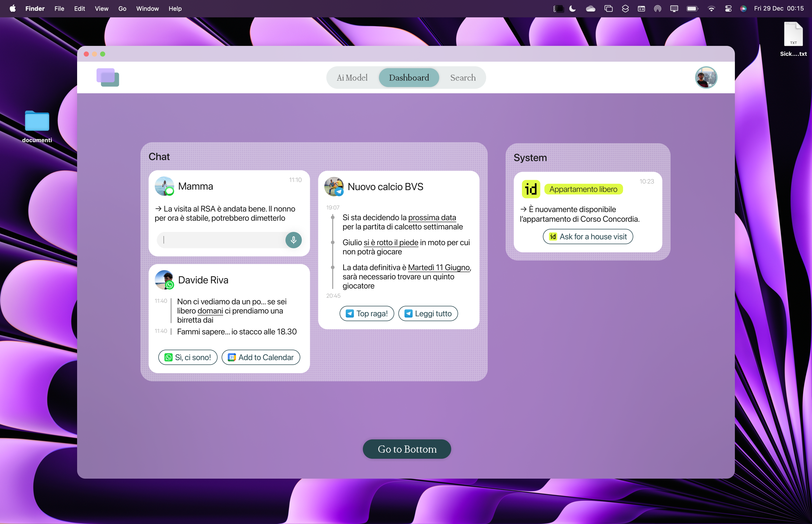
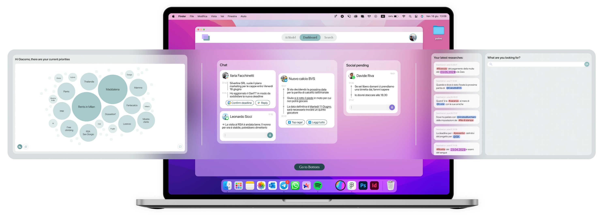
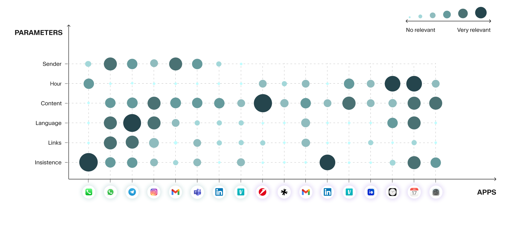
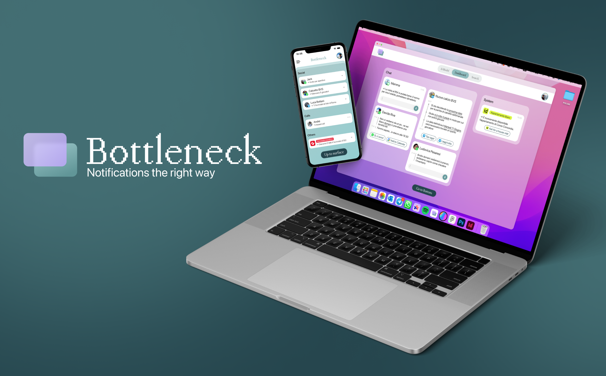
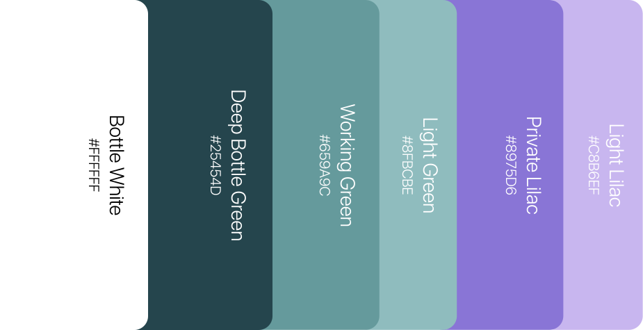
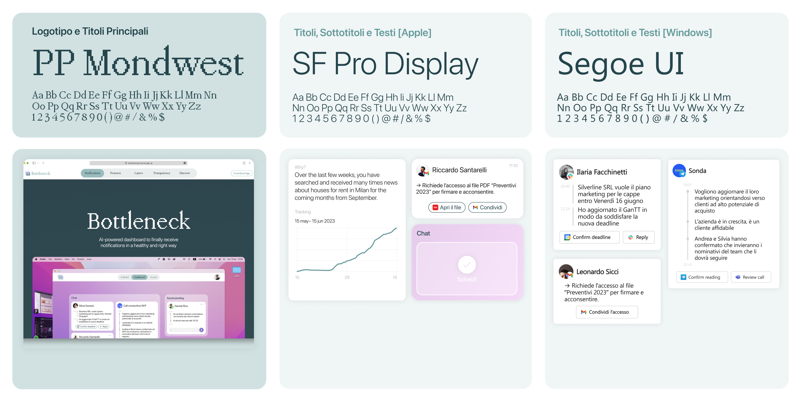
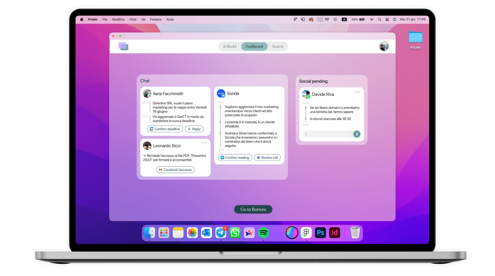

Project Name
Bottleneck
Bottleneck
Field UX/UI
Year 2024
Bottleneck is a digital service supporting the user in the daily management of incoming notifications. It
works on different devices during work time; prioritising notifications through AI in order to promote a
more balanced digital life and an inclusive approach in the use of communication tools.
Skills
 Concept
Concept
UX Research
UI design
UI Prototyping

Flow & Interactions
The computer-first application is organized into three main screens: the dashboard (which serves as the
home page), the search screen, and the AI setting screen. Navigation is via a navbar centered at the top,
or alternatively via computer scroll shortcuts.
The UI of the service is designed to be minimally invasive, blending almost like a widget with one's computer desktop.
The UI of the service is designed to be minimally invasive, blending almost like a widget with one's computer desktop.

Screens Dashboard
Search
AI Model
1. The system detects all notifications, both desktop and mobile, filtering out work and personal
ones.
2. The system is able to
synthesise entire long conversations into a single message.
synthesise entire long conversations into a single message.
3. The communication channels scattered across different social networks are grouped together and
aggregated in a single dashboard.
Taxonomy
Notifications are classified and prioritised on the basis of a taxonomy. It is a completely flexible
scheme, capable of calibrating itself according to the user's specific needs.

Brand
Developement
Developement


System Integration
Bottleneck's goal is to be invisible and minimise invasiveness for the user. For this reason, the system
incorporates the host operating system through fonts and graphic elements.


Produced during the master's degree in communication design at the Politecnico di Milano.
Group project carried out with: Bonfanti Sofia, Clericetti Giovanni and Prinetti Tommaso
Group project carried out with: Bonfanti Sofia, Clericetti Giovanni and Prinetti Tommaso
May 2024